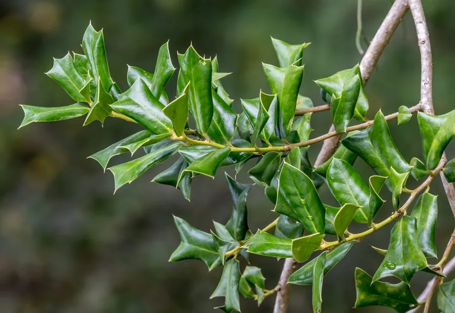

灌木与花木 · 植物界
枸骨 Ilex cornuta

叶片边缘长有坚硬刺齿的常绿灌木，冬季结满红色浆果，是圣诞节花环的传统材料，也被视为吉祥植物。
- 分类
- 门被子植物门纲木兰纲目冬青目科冬青科属冬青属
- 栖息环境
- 海拔 1000 米以下的山坡、灌丛与溪边，喜温暖湿润，稍耐阴
- 地理分布
- 中国长江流域及以南地区，江苏、浙江、安徽、江西等地常见
- 保护级别
- 暂无评估；中国未列入国家重点保护野生植物名录
物种志
枸骨为常绿灌木或小乔木，高可达 3 m，树皮灰白色，小枝有棱；叶片革质，四角状长圆形，顶端具 3 枚硬刺，两侧各有 1–2 枚刺齿，深绿色有光泽，老叶上的刺有时退化。花期 4–5 月，聚伞花序生于叶腋，花小、黄绿色；果实为核果，球形，成熟时鲜红色，直径 8–10 mm，可宿存至翌年春季。
枸骨原产中国长江流域及以南地区，喜光、稍耐阴，喜温暖湿润，耐寒性较强，适宜疏松肥沃、排水良好的微酸性土壤。因叶形奇特、红果越冬，欧美常称其为“中国冬青”，是圣诞花环与装饰的传统材料；在中国，枸骨枝叶四季常青、果色红艳，常被栽于庭院，寓意吉祥。叶、根与果实可入药，中药“枸骨叶”能清热养阴，但果实有小毒，不可随意食用。
形态与习性
- 株高可达 3 m，小枝有棱
- 花期4–5 月，花小、黄绿色
- 果期9–12 月，核果鲜红色
- 光照喜光，稍耐阴
- 水分喜湿润，怕积水
- 土壤微酸性、疏松肥沃的壤土
- 主要用途庭院观赏、圣诞装饰、叶与根入药
趣味知识
- 枸骨的叶片顶端有 3 枚硬刺，鸟兽难以落脚，因此别称“鸟不宿”。
- 枸骨冬季结满红色浆果，是欧美圣诞花环的传统材料，被称为“中国冬青”。
- 枸骨的老叶刺会逐渐退化，但新叶上的刺通常坚硬锐利。
- 枸骨果实有小毒，不可随意食用，但叶可入药，中药称“枸骨叶”。